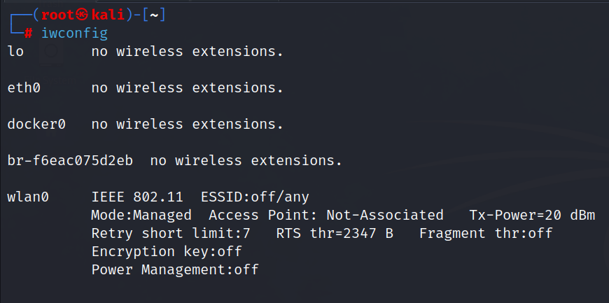

When it comes to pen testing wireless networks espically WPA2 personal as it might surprise you initially how fast you can acutally and how access a network if there is a password in place.
Command: iwconfig

Will enable the monitor mode on
Command: airmon-ng check kill
check any processes thart are running and see that

Command: airmon-ng start wlan0
as you can see that we have enabled the monitor mode


This is typically given by a client which is the SSID so that you know what's in
scope and what you want to attack.
Will use a tool called Arrow Jumo
Command: airodump-ng wlan0mon
as i don't have the mon written along w ith wlan0 will be used in this case.
Command: airodump-ng wlan0
BSSID is the mac address of the access point
PWR we have power level which the lower the number here means the closer we are to that device.
My network adapter is not working so i had not made notes for this section.